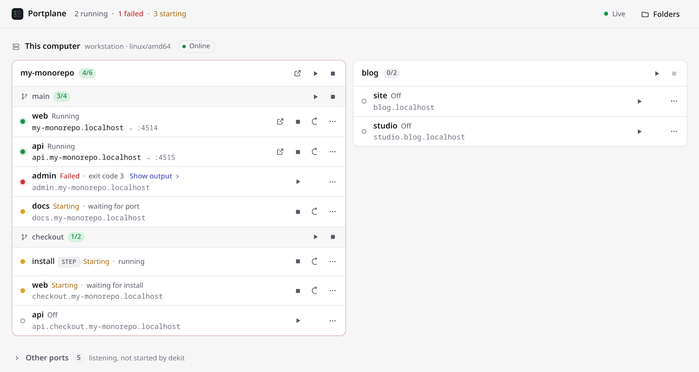

Open source · macOS · Linux · Windows (beta)
Every dev server,
on every machine,
in one window.
See what is running across all your project folders and your other machines over SSH. Open each app at a stable https://<name>.localhost URL, and start or stop it with a click. No logs, no terminals: the state of things at a glance.
Free and open source under Apache-2.0. Downloads come from GitHub Releases, with signed checksums.

See
Every app's state (on, starting, failed or off), its stable URL and the port behind it, grouped by project and git worktree. Ports opened by anything else show up too.
Act
Start, stop or restart an app or a whole project. Open everything a project runs in one click. When something fails, the last lines of its output are one click away, ready to copy.
Set up
Point Portplane at a folder. It finds the apps in your monorepos and worktrees, proposes a URL for each and writes plain dekit config after you review the diff.
Reach
Add a machine from ~/.ssh/config or Tailscale. Its servers appear next to yours and open at https://<app>.<machine>.localhost through the SSH connection.
Built on the tools you already use
Portplane does not run your servers and does not replace anything. It sits on top of two small tools and keeps their config plain and yours.
| Piece | Owns |
|---|---|
| dekit | Running and supervising processes, dependencies between tasks, restarts |
| portless | Stable .localhost URLs, the local HTTPS proxy and its trusted certificate |
| Portplane | Finding projects, the combined view, remote machines, setup |
- Local-first. No accounts, no cloud, no telemetry.
- No listener on your network. The UI lives on loopback; other machines are reached only over SSH, with your keys.
- No lock-in. Generated config is plain dekit YAML you can keep using without Portplane.
Install
Download the .dmg for your Mac (Apple silicon: arm64, Intel: amd64) and drag Portplane to Applications. It lives in the menu bar. Or install the command line:
curl -fsSL https://akamachinecode.github.io/portplane/install.sh | shPortplane is not notarized by Apple. The first time you open the app, macOS blocks it: open System Settings → Privacy & Security and choose Open Anyway. The terminal install is not affected.
curl -fsSL https://akamachinecode.github.io/portplane/install.sh | shOr download the .deb or .rpm from the latest release.
irm https://akamachinecode.github.io/portplane/install.ps1 | iexWindows support is in beta. The binary is not code-signed, so SmartScreen may warn you: choose More info → Run anyway.
Then add a folder and open the window:
portplane folders add ~/code
portplaneYou also need dekit and portless; Portplane tells you what is missing and the exact command to install it. Every download can be verified: see the install guide.